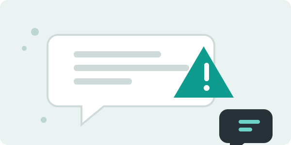
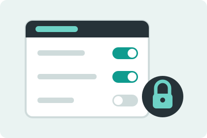

Casi ningún problema en Internet parte con algo complicado. Parte con un
mensaje que se lee apurado, con una cuenta que quedó abierta o con un dato
que se publicó sin pensar quién lo iba a leer.
Acá vas a encontrar lo que sirve de verdad: cómo notar que un mensaje viene
con mala intención, qué revisar en la configuración de tus cuentas, qué
información conviene dejar fuera y qué hacer cuando el problema ya ocurrió.
Son cuatro cosas cortas y ninguna necesita saber programar.

La mayoría de los engaños llegan escritos, no programados.
Tres señales de que algo no anda bien
Te meten prisa
"Responde antes de las 6", "tu cuenta se cierra hoy", "quedan dos cupos".
La urgencia existe para que no alcances a revisar. Ninguna empresa seria
resuelve nada en cinco minutos por mensaje.
Qué hacer: cerrar el mensaje y entrar tú al sitio oficial por tu cuenta.
Te piden algo que ya deberían tener
Tu banco ya sabe tu número de cuenta. Tu liceo ya tiene tu correo. Cuando
alguien te pide un dato que se supone que ya maneja, es porque en realidad
no es quien dice ser.
Qué hacer: no responder y confirmar por un canal que tú conozcas.
La dirección está casi bien
Los sitios falsos copian el diseño completo y cambian una letra en la
dirección: un cero por una o, una ele por una i, un punto de más. A simple
vista pasa piola, pero es otra página.
Qué hacer: leer la dirección letra por letra antes de escribir cualquier clave.
Tus claves, en dos minutos
Una buena contraseña no es la que tiene más símbolos raros, es la que tiene
más largo. Los ataques automáticos parten probando palabras del diccionario
y combinaciones cortas, así que una frase de tres o cuatro palabras les
complica mucho más la vida que ocho caracteres con un asterisco al final.
Floja
antonia2009 — el nombre y el año están escritos en tus propias redes.
Firme
MiTiaTieneDosGatos — larga, fácil de recordar y sin sentido para el resto.
Si vas a tener una sola contraseña realmente única, que sea la del correo.
Desde ahí se recupera todo lo demás, así que quien lo abra puede ir tomando
tus otras cuentas una por una sin apuro.
Y donde te la ofrezcan, deja activada la verificación en dos pasos. Funciona
como un segundo candado: aunque alguien tenga tu contraseña anotada al lado,
sin el código que llega a tu teléfono no entra.
Revisa la configuración de tus cuentas
Las redes sociales vienen configuradas para que compartas lo más posible,
porque así les conviene. Dedicarle diez minutos a la configuración de
privacidad cambia bastante lo que otros pueden ver de ti.

Los interruptores que vienen encendidos casi nunca te favorecen.
Buenas prácticas para dejar listas
Pon tu perfil en privado y revisa de vez en cuando quién te sigue.
Apaga la ubicación en las publicaciones y en las historias.
Activa la verificación en dos pasos en el correo y en las redes.
Usa una contraseña larga y distinta para cada cuenta importante.
Revisa qué aplicaciones tienen permiso para entrar a tu cuenta y saca las que no uses.
Ponle bloqueo al celular con huella, patrón o PIN.
Cierra sesión cuando ocupes un computador prestado.
Si algo te incomoda en línea, cuéntaselo a un adulto de confianza.
Qué dejar público y qué no
Un dato solo casi nunca es problema. El problema aparece cuando se juntan
varios y arman un perfil tuyo bastante completo:
Información que aparece seguido en los perfiles
Dato
¿Público?
Por qué
Tu correo personal
Nunca
Es la puerta de entrada a todas tus otras cuentas.
Tu número de teléfono
Nunca
Sirve para hacerse pasar por ti y para recuperar contraseñas.
Fotos de tu carné o de documentos
Nunca
Con una foto así se abren cuentas a tu nombre.
El liceo donde estudias
Con cuidado
Junto con tu horario deja claro dónde estás cada día.
Tu nombre completo
Con cuidado
Con tu comuna alcanza para llegar a ti sin mucho esfuerzo.
Tus gustos, música o pasatiempos
Sin problema
No sirven para entrar a ninguna cuenta tuya.
Si algo ya pasó
Denunciar temprano evita que la cosa crezca.
Acá el orden importa, por eso va numerado:
Cambia la contraseña desde otro dispositivo, no desde el que sospechas.
Desconecta los dispositivos que no reconozcas en la lista de sesiones activas.
Saca capturas de pantalla antes de bloquear a nadie: son tu respaldo.
Usa la opción de denunciar de la propia red social, que es la vía más rápida.
Cuéntale a un adulto de confianza, aunque te dé lata explicarlo.
Dónde pedir ayuda
La ANCI es el organismo
del Estado de Chile a cargo de la ciberseguridad. En su sitio hay ciberconsejos
y una guía para denunciar acoso digital: